Recommendation Systems • Popular Architectures
- Overview
- Deep Neural Network Models for Recommender Systems
- Wide and Deep (2016)
- Factorization Machines / FM (2010)
- Deep Factorization Machine / DeepFM (2017)
- Neural Collaborative Filtering / NCF (2017)
- Deep and Cross Networks / DCN (2017)
- AutoInt (2019)
- DLRM (2019)
- DCN V2 (2020)
- DHEN (2022)
- GDCN (2023)
- Graph Neural Networks-based RecSys Architectures
- Two Towers in RecSys
- Summary
- Comparative Analysis
- References
Overview
- This primer explores some of the most popular architectures used in recommender systems, focusing on how these systems process and utilize different types of features for generating recommendations.
- The plot below (source) is a visual representation of the models and architectures for the task of Click-Through Rate Prediction on the Criteo dataset. With this use-case as our poster child, we will discuss the inner workings of some of the major model architectures listed in the plot.
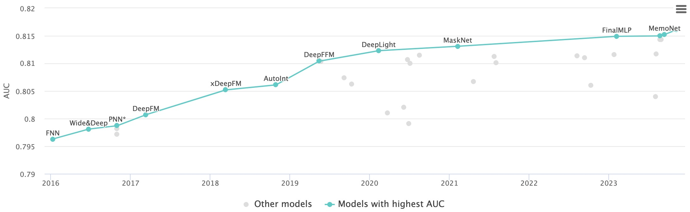
Deep Neural Network Models for Recommender Systems
- Deep neural network (DNN) models have become a cornerstone in modern recommendation systems due to their ability to capture complex patterns and deliver highly personalized and accurate recommendations.
- Leveraging variations of artificial neural networks (ANNs), DNNs excel in modeling intricate, non-linear relationships and generalizing beyond traditional linear approaches. Their strength lies in integrating diverse data types—such as image, audio, or textual content—and capturing sequential behaviors, such as user interactions over time, to provide contextually relevant recommendations.
- While computationally expensive and requiring significant data and expertise, the transformative capabilities of DNNs, especially when applied to large-scale datasets, make them indispensable for building state-of-the-art recommendation systems.
Advantages of DNN Models for Recommender Systems
- Better Generalization Beyond Linear Models:
- DNN models excel in learning non-linear relationships, which enables them to model user-item interactions with greater complexity than traditional linear approaches.
- Unified Representation of Heterogeneous Signals:
- DNNs can integrate various forms of data into a unified representation by modeling different facets of users and items. For example, convolutional neural networks (CNNs) can process image, audio, or textual content as side information to enrich item embeddings, leading to more personalized and accurate recommendations.
- Scalability with Large-Scale Data:
- DNN models are particularly effective when applied to large-scale datasets. They leverage the volume and variety of data to learn richer, more nuanced representations and interactions.
- Exploitation of Sequential Information:
- Sequential patterns in user behavior, such as viewing, purchasing, or search history, can be captured using models like Long Short-Term Memory (LSTM) networks. These models predict the next action by analyzing sequences of past actions, improving the contextual relevance of recommendations.
Scenarios Where Deep Learning May Not Be Effective
-
Despite their advantages, DNN models are not always the optimal choice, especially in scenarios where well-tuned machine learning (ML) baselines can outperform them:
- Sparse Data:
- In situations where user-item interactions are sparse or there is limited data available for training, DNNs struggle to learn meaningful patterns. Traditional techniques like matrix factorization or simpler ML algorithms can be more effective and less prone to overfitting.
- Low-Volume Data:
- DNNs require large amounts of data to train effectively. When datasets are small, models like gradient-boosted trees or logistic regression, which require less data and are less computationally intensive, can outperform DNNs. Additionally, DNNs are more prone to overfitting in low-volume data scenarios, leading to poor generalization on unseen data.
- Homogeneous Data:
- When the data is relatively uniform or lacks diverse signals (e.g., only numerical features without contextual data like images or text), the added complexity of DNNs is often unnecessary. Well-tuned linear models or tree-based methods can achieve comparable performance with lower computational overhead.
- Sparse Data:
Common Variations of Neural Building Blocks
- Feedforward Neural Networks (FFNNs):
- FNNs are a type of ANN where information flows in a unidirectional manner from one layer to the next.
- Multilayer perceptrons (MLPs) are specific types of FNNs that consist of at least three layers: an input layer, one or more hidden layers, and an output layer.
- MLPs are versatile and can be applied to a wide range of scenarios.
- Convolutional Neural Networks (CNNs):
- CNNs, known for their prowess in image processing tasks, employ convolutional operations to extract meaningful features from input data.
- In recommendation systems, CNNs can be used to process side information such as item images, audio previews, or text descriptions.
- Recurrent Neural Networks (RNNs):
- Designed for sequential data, RNNs capture temporal dependencies and are used for tasks such as predicting user behavior based on past actions.
- Variants like LSTMs are particularly adept at handling longer-term dependencies in sequences, and model sequential recommendations.
Applications in Recommendation Systems
- Deep learning models build upon traditional recommendation techniques, such as collaborative filtering, by employing embeddings to represent categorical variables like users or items. These embeddings place similar users or items closer together in a vector space, facilitating better predictions. For instance, a deep learning approach to collaborative filtering can learn user and item embeddings from their interaction history using neural networks.
- These models benefit from advanced network architectures and optimization algorithms, which enable efficient training on large datasets.
Wide and Deep (2016)
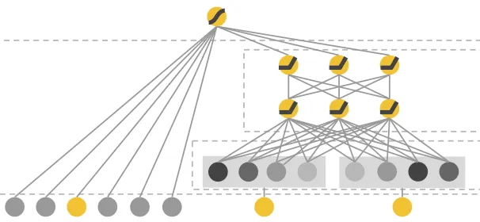
- While neural collaborative filtering (NCF) revolutionized the domain of recommender systems, it lacks an important ingredient that turned out to be extremely important for the success of recommenders: cross features. The idea of cross features was first popularized in Google’s 2016 paper Wide & Deep Learning for Recommender Systems by Cheng et al.
- Wide and Deep model architectures in recommender systems combine a linear model for the “wide” part, which captures cross-feature interactions that models nonlinear interactions between the original features, with a NCF model for the “deep” part, which learns complex feature relationships and interactions. This hybrid approach balances memorization and generalization by capturing both specific feature combinations and broader patterns in the data.
Background: Cross Features
What are feature crosses and why are they important?
- A cross feature is a second-order feature (i.e., a cross-product transformation) that is created by “crossing” two sparse/categorical features (using the multiplication operation), thus modeling the interactive effects between the two features. Cross features capture nonlinear interactions between the original features, allowing the model to account for relationships that linear models would miss. In real-world problems, features often interact, meaning the effect of one feature on the output depends on the value of another feature.
- By modeling these interactions, cross features allow recommender systems to capture more complex relationships in the data, improving recommendations and ultimately, user engagement.
- For example, in an ad-click prediction system, consider the device type and time of day as two features. Their interaction could significantly affect the likelihood of a user clicking on an ad. For instance, users may be more likely to click on ads from their mobile device during evening hours when they are casually browsing, compared to when they are at work on a computer during the day. Such nonlinear interactions between these original features can be effectively modeled and captured through cross features, enabling the system to make more accurate predictions.
-
As another example, in the Google Play Store, first-order features include the impressed app, or the list of user-installed apps. These two can be combined to create powerful cross features, such as:
AND(user_installed_app='netflix', impression_app='hulu')- which is 1 if the user has Netflix installed and the impressed app is Hulu.
-
Cross features can also be more coarse-grained, such as:
AND(user_installed_category='video', impression_category='video')- which is 1 if the user installed video apps before and the impressed app is a video app as well. The authors argue that adding cross features of different granularities enables both memorization (from more granular crosses) and generalization (from less granular crosses).
- As another example (source), imagine we are building a recommender system to sell a “blender” to customers. A customer’s past purchase history, such as
purchased_bananasandpurchased_cooking_books, or geographic features, are single features. If a customer has purchased both bananas and cooking books, then this customer will more likely click on the recommended blender. The combination ofpurchased_bananasandpurchased_cooking_booksis referred to as a feature cross, which provides additional interaction information beyond the individual features.
What are the challenges in learning feature crosses?
- In web-scale applications, data is mostly categorical, leading to a large and sparse feature space. Identifying effective feature crosses in this setting often requires manual feature engineering or exhaustive search.
- Traditional feed-forward multilayer perceptron (MLP) models are universal function approximators; however, they cannot efficiently approximate even 2nd or 3rd-order feature crosses (Wang et al. (2020), Beutel et al. (2018)).
Motivation
- Generalized linear models with nonlinear feature transformations are widely used for large-scale regression and classification problems with sparse inputs. Memorization of feature interactions through a wide set of cross-product feature transformations are effective and interpretable, while generalization requires more feature engineering effort. However, memorization and generalization are both important for recommender systems. With less feature engineering, deep neural networks can generalize better to unseen feature combinations through low-dimensional dense embeddings learned for the sparse features. However, deep neural networks with embeddings can over-generalize and recommend less relevant items when the user-item interactions are sparse and high-rank.
The Wide and Deep architecture demonstrated the critical importance of cross features, that is, second-order features that are created by crossing two of the original features. It combines a wide (and shallow) module for cross features with a deep (and narrow) module much like NCF. It seeks to obtain the best of both worlds by combining the unique strengths of wide and deep models, i.e., memorization and generalization respectively, thus enabling better recommendations.
- Wide and Deep learning jointly train wide linear models and deep neural networks – to combine the benefits of memorization and generalization for recommender systems. Wide linear models can effectively memorize sparse feature interactions using cross-product feature transformations, while deep neural networks can generalize to previously unseen feature interactions through low dimensional embeddings.
Architecture
Wide part: The wide part of the model is a generalized linear model that takes into account cross-product feature transformations, in addition to the original features. The cross-product transformations capture interactions between categorical features. For example, if you were building a real estate recommendation system, you might include a cross-product transformation of
city=San FranciscoANDtype=condo. These cross-product transformations can effectively capture specific, niche rules, offering the model the benefit of memorization.
Deep part: The deep part of the model is a feed-forward neural network that takes all features as input, both categorical and continuous. However, categorical features are typically transformed into embeddings first, as neural networks work with continuous data. The deep part of the model excels at generalizing patterns from the data to unseen examples, offering the model the benefit of generalization.
- As a recap, a Generalized Linear Model (GLM) is a flexible generalization of ordinary linear regression that allows for response/outcome variables to have error distribution models other than a normal distribution. GLMs are used to model relationships between a response/outcome variable and one or more predictor variables. Examples of GLMs include logistic regression (used for binary outcomes like pass/fail), Poisson regression (for count data), and linear regression (for continuous data with a normal distribution).
- As an example (source), say you’re trying to offer food/beverage recommendations based on an input query. People looking for specific items like “iced decaf latte with nonfat milk” really mean it. Just because it’s pretty close to “hot latte with whole milk” in the embedding space doesn’t mean it’s an acceptable alternative. Similarly, there are millions of these rules where the transitivity (a relation between three elements such that if it holds between the first and second and it also holds between the second and third, it must necessarily hold between the first and third) of embeddings may actually do more harm than good.
- On the other hand, queries that are more exploratory like “seafood” or “italian food” may be open to more generalization and discovering a diverse set of related items.
Building upon the food recommendation example earlier, as shown in the graph below (source), sparse features like
query="fried chicken"anditem="chicken fried rice"are used in both the wide part (left) and the deep part (right) of the model.

- For the wide component utilizing a generalized linear model, cross-product transformations are carried out on the binary features (e.g.,
AND(gender=female, language=en)) is 1 if and only if the constituent features (gender=femaleandlanguage=en) are all 1, and 0 otherwise. This captures the interactions between the binary features, and adds non-linearity to the generalized linear model. - For the deep component utilizing a feed-forward neural network, each of the sparse, high-dimensional categorical features are first converted into a low-dimensional, dense real-valued vector, often referred to as an embedding vector. The dimensionality of the embeddings are usually on the order of O(10) to O(100). The embedding vectors are initialized randomly and then the values are trained to minimize the final loss function during model training.
- During training, the prediction errors are backpropagated to both sides to train the model parameters, i.e., the two models function as one “cohesive” architecture and are trained jointly with the same loss function.
- The figure below from the paper shows how Wide and Deep models form a sweet middle compared to just Wide and just Deep models:

- Thus, the key architectural choice in Wide and Deep is to have both a wide module, which is a linear model that takes all cross features directly as inputs, and a deep module, which is essentially an NCF, and then combine both modules into a single output task head that learns from user/app engagements. The architectural diagram below (source) showcases this structure.
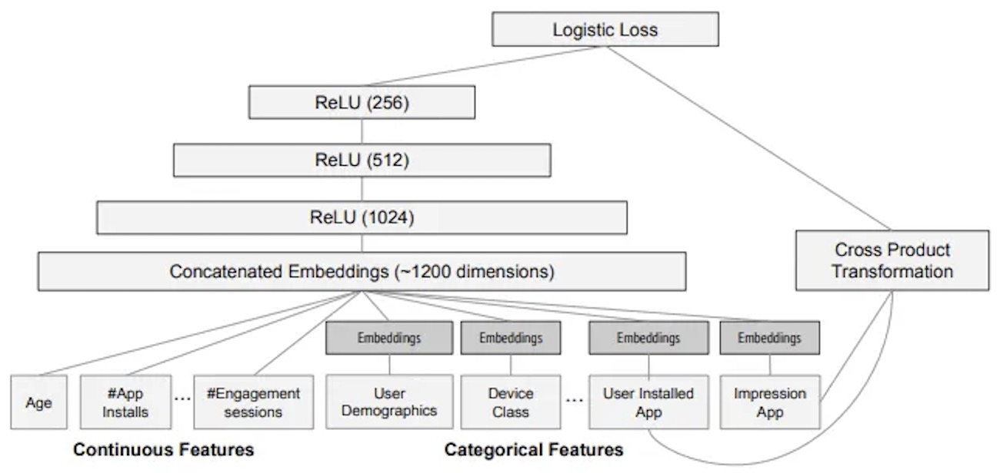
- By combining these two components, Wide and Deep models aim to achieve a balance between memorization and generalization, which can be particularly useful in recommendation systems, where both aspects can be important. The wide part can capture specific item combinations that a particular user might like (based on historical data), while the deep part can generalize from user behavior to recommend items that the user hasn’t interacted with yet but might find appealing based on their broader preferences. Put simply, Wide and Deep architectures combine a deep neural network component for capturing complex patterns and a wide component using a generalized linear model that models feature interactions explicitly. This allows the model to learn both deep representations and exploit feature interactions, providing a balance between memorization and generalization.
-
In the Wide & Deep Learning model, both the wide and deep components handle sparse features, but in different ways:
- Wide Component:
- The wide component is a generalized linear model that uses raw input features and transformed features.
- An important transformation in the wide component is the cross-product transformation. This is particularly useful for binary features, where a cross-product transformation like
AND(gender=female language=en)is 1 if and only if both constituent features are 1, and 0 otherwise. - Such transformations capture the interactions between binary features and add non-linearity to the generalized linear model.
- Deep Component:
- The deep component is a feed-forward neural network.
- For handling categorical features, which are often sparse and high-dimensional, the deep component first converts these features into low-dimensional, dense real-valued vectors, commonly referred to as embedding vectors. The dimensionality of these embeddings usually ranges from 10 to 100.
- These dense embedding vectors are then fed into the hidden layers of the neural network. The embeddings are initialized randomly and trained to minimize the final loss function during model training.
- Combined Model:
- The wide and deep components are combined using a weighted sum of their output log odds, which is then fed to a common logistic loss function for joint training.
- In this combined model, the wide part focuses on memorization (exploiting explicit feature interactions), while the deep part focuses on generalization (learning implicit feature representations).
- The combined model ensures that both sparse and dense features are effectively utilized, with sparse features often transformed into dense representations for efficient processing in the deep neural network.
- Wide Component:
Example
- As an example, let’s consider a music recommendation app using the Wide and Deep Learning model, the input features for both the wide and deep components would be tailored to capture different aspects of user preferences and characteristics of the music items. Let’s consider what these inputs might look like.
Input to the Wide Component
-
The wide component would primarily use sparse, categorical features, possibly transformed to capture specific interactions:
- User Features: Demographics (age, gender, location), user ID, historical user behavior (e.g., genres listened to frequently, favorite artists).
- Music Item Features: Music genre, artist ID, album ID, release year.
- Cross-Product Transformations: Combinations of categorical features that are believed to interact in meaningful ways. For instance, “user’s favorite genre = pop” AND “music genre = pop”, or “user’s location = USA” AND “artist’s origin = USA”. These cross-products help capture interaction effects that are specifically relevant to music recommendations.
Input to the Deep Component
-
The deep component would use both dense and sparse features, with sparse features transformed into dense embeddings:
- User Features (as Embeddings): Embeddings for user ID, embedding vectors for historical preferences (like a vector summarizing genres listened to), demographics if treated as categorical.
- Music Item Features (as Embeddings): Embeddings for music genre, artist ID, album ID. These embeddings capture the nuanced relationships in the music domain.
- Additional Dense Features: If available, numerical features like the number of times a song has been played, user’s average listening duration, or ratings given by the user.
-
The embeddings created to serve as the input to the Dense component are “learned embeddings” or “trainable embeddings,” as they are learned directly from the data during the training process of the model.
-
Here’s a Python code snippet using TensorFlow to illustrate how a categorical feature (like user IDs) is embedded:
import tensorflow as tf
# Assuming we have 10,000 unique users and we want to embed them into a 64-dimensional space
num_unique_users = 10000
embedding_dimension = 64
# Create an input layer for user IDs (assuming user IDs are integers ranging from 0 to 9999)
user_id_input = tf.keras.Input(shape=(1,), dtype='int32')
# Create an embedding layer
user_embedding_layer = tf.keras.layers.Embedding(input_dim=num_unique_users,
output_dim=embedding_dimension,
input_length=1,
name='user_embedding')
# Apply the embedding layer to the user ID input
user_embedding = user_embedding_layer(user_id_input)
# Flatten the embedding output to feed into a dense layer
user_embedding_flattened = tf.keras.layers.Flatten()(user_embedding)
# Add a dense layer (more layers can be added as needed)
dense_layer = tf.keras.layers.Dense(128, activation='relu')(user_embedding_flattened)
# Create a model
model = tf.keras.Model(inputs=user_id_input, outputs=dense_layer)
# Compile the model
model.compile(optimizer='adam', loss='mse') # Adjust the loss based on your specific task
# Model summary
model.summary()
In this code:
- We first define the number of unique users (
num_unique_users) and the dimensionality of the embedding space (embedding_dimension). - An input layer is created to accept user IDs.
- An embedding layer (
tf.keras.layers.Embedding) is added to transform each user ID into a 64-dimensional vector. This layer is set to be trainable, meaning its weights (the embeddings) are learned during training. - The embedding layer’s output is then flattened and passed through a dense layer for further processing.
-
The model is compiled with an optimizer and loss function, which should be chosen based on the specific task (e.g., classification, regression).
- This code example demonstrates how to create trainable embeddings for a categorical feature within a neural network using TensorFlow. These embeddings are specifically tailored to the data and task at hand, learning to represent each category (in this case, user IDs) in a way that is useful for the model’s predictive task.
Combining Inputs in Wide & Deep Model
- Joint Model: The wide and deep components are joined in a unified model. The wide component helps with memorization of explicit feature interactions (especially useful for categorical data), while the deep component contributes to generalization by learning implicit patterns and relationships in the data.
- Feature Transformation: Sparse features are more straightforwardly handled in the wide part through cross-product transformations, while in the deep part, they are typically converted into dense embeddings.
-
Model Training: Both parts are trained jointly, allowing the model to leverage the strengths of both memorization and generalization.
- As an example, in a music recommendation app, this combination allows the model to not only consider obvious interactions (like a user’s past preferences for certain genres or artists) but also to uncover more subtle patterns and relationships within the data, which might not be immediately apparent but are influential in determining a user’s music preferences.
Results
- They productionized and evaluated the system on Google Play Store, a massive-scale commercial mobile app store with over one billion active users and over one million apps. Online experiment results show that Wide and Deep significantly increased app acquisitions compared with wide-only and deep-only models.
- Compared to a deep-only model, Wide and Deep improved acquisitions in the Google Play store by 1%. Consider that Google makes tens of billions in revenue each year from its Play Store, and it’s easy to see how impactful Wide and Deep was.
Summary
- Architecture: The Wide and Deep model in recommendation systems incorporates cross features, particularly in the “wide” component of the model. The wide part is designed for memorization and uses linear models with cross-product feature transformations, effectively capturing interactions between categorical features. This is crucial for learning specific, rule-based information, which complements the “deep” part of the model that focuses on generalization through deep neural networks. By combining these approaches, Wide and Deep models effectively capture both simple, rule-based patterns and complex, non-linear relationships within the data.
- Pros: Balances memorization (wide component) and generalization (deep component), capturing both complex patterns and explicit feature interactions.
- Cons: Increased model complexity and potential challenges in training and optimization.
- Advantages: Improved performance by leveraging both deep representations and explicit feature interactions.
- Example Use Case: E-commerce platforms where a combination of user behavior and item features plays a crucial role in recommendations.
- Phase: Ranking.
- Recommendation Workflow: Given it’s complexity, the deep and wide architecture is suitable for the ranking phase. The wide component can capture explicit feature interactions and enhance the candidate generation process. The deep component allows for learning complex patterns and interactions, improving the ranking of candidate items based on user-item preferences.
Factorization Machines / FM (2010)
- Factorization Machines (FM), introduced in Rendle (2010), extend the traditional matrix factorization (MF) model to handle high-dimensional sparse input data and model pairwise interactions between features.
Unlike MF, which is limited to user-item interaction matrices, the FM architecture is particularly effective for incorporating high-dimensional side information/contextual features, (such as user demographics, item attributes, or temporal context) along with sparse user-item interactions.
-
The key innovation of FM lies in its ability to generalize matrix factorization by learning pairwise feature interactions across any set of features, not just users and items. It achieves this through a latent factorization of feature interactions, representing each feature as a low-dimensional embedding. For example, in a movie recommendation system, FM can model interactions like
user-movie,user-genre, oruser-agein a unified framework. -
FM models second-order interactions between features in a latent space, making it more expressive than linear models while being computationally efficient. It computes these interactions efficiently using factorized parameters, avoiding the computational cost of explicitly enumerating all feature pairs, which would otherwise be infeasible in large-scale systems.
-
FM works exceptionally well with sparse, high-dimensional data, a common trait in recommendation systems and click-through rate prediction tasks. Its design allows it to handle such data effectively, ensuring scalability without sacrificing predictive accuracy.
-
Unlike traditional matrix factorization, FM can incorporate arbitrary features beyond user and item IDs, including metadata or contextual signals. This flexibility makes it suitable for a wide range of applications where additional information can enhance predictions.
-
The FM model predicts the interaction score \(\hat{y}\) for a given feature vector \(x\) as:
\[\hat{y} = w_0 + \sum_{i=1}^n w_i x_i + \sum_{i=1}^n \sum_{j=i+1}^n \langle v_i, v_j \rangle x_i x_j\]- where,
- \(w_0\): Global bias term.
- \(w_i\): Weight for each feature \(x_i\).
- \(\langle v_i, v_j \rangle\): Dot product of latent vectors \(v_i\) and \(v_j\), representing the interaction between features \(x_i\) and \(x_j\).
- where,
-
The following figure from the paper shows an example of sparse, real-valued feature vectors \(\mathbf{x}\), created from transactions in a recommendation system. Each row represents a feature vector \(\mathbf{x}^{(i)}\) with its corresponding target \(y^{(i)}\) (e.g., a user’s rating of a movie):
- Blue Columns: Indicator variables for the active user.
- Red Columns: Indicator variables for the active item (e.g., the movie being rated).
- Yellow Columns: Implicit indicators for other items the user has rated (e.g., related movies).
- Green Column: A real-valued feature representing the time (e.g., in months).
- Brown Columns: Indicator variables for the last item the user rated before the active one.
- Rightmost Column: The target variable (e.g., the user’s rating).
- This example demonstrates FM’s ability to process diverse types of contextual and historical information, enabling it to learn complex patterns and relationships from these interactions.
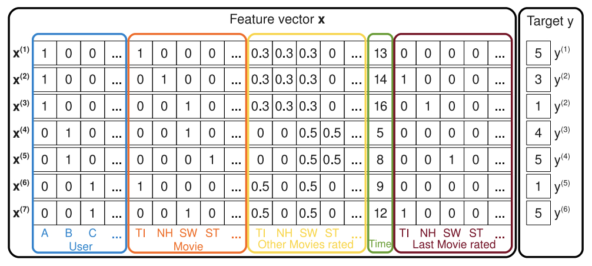
- FM’s structure makes it ideal for handling datasets where feature interactions are critical but the data is sparse, such as in recommender systems, advertising, and search.
Summary
- Pros:
- Handles both structured and unstructured features.
- Scalable for high-dimensional sparse datasets.
- Provides a unified framework for incorporating contextual information.
- Cons:
- Limited to modeling pairwise interactions; higher-order interactions require extensions or integration with deep learning models.
- May not capture non-linear interactions as effectively as deep learning-based approaches.
- Example Use Case: CTR prediction, recommendation systems, and search ranking.
- Phase: Candidate Generation, Ranking.
- Recommendation Workflow: FM is commonly used in the ranking phase, where it effectively models pairwise feature interactions for personalized recommendations or ad targeting.
Deep Factorization Machine / DeepFM (2017)
- Similar to Google’s DCN, Huawei’s DeepFM, as introduced in Guo et al. (2017), also replaces manual feature engineering in the wide component of the Wide and Deep model with a specialized neural network that learns cross features. However, unlike DCN, the wide component in DeepFM is not a cross neural network but instead utilizes a factorization machine (FM) layer.
What is the role of the FM layer? It computes the dot products of all pairs of embeddings. For example, in a movie recommender system with four id-features as inputs, such as user id, movie id, actor ids, and director id, the FM layer calculates six dot products. These correspond to the combinations
user-movie,user-actor,user-director,movie-actor,movie-director, andactor-director. The output from the FM layer is concatenated with the output from the deep component and passed through a sigmoid layer to generate the model’s predictions.
It is important to note that DeepFM, much like DCN, employs a brute-force method by considering all possible feature combinations uniformly (i.e., calculating all pairwise interactions). In contrast, more recent approaches such as AutoInt utilize self-attention mechanisms to automatically determine the most relevant feature interactions, effectively identifying which interactions are most significant (and ignoring others by setting their attention weights to zero).
- The figure below, taken from the paper, illustrates the architecture of DeepFM. Both the wide and deep components share the same raw feature vector as input, allowing DeepFM to simultaneously learn both low- and high-order feature interactions from the input data. Notably, in the figure, there is a circle labeled “+” in the FM layer alongside the inner products. This functions as a skip connection, directly passing the concatenated inputs to the output unit.
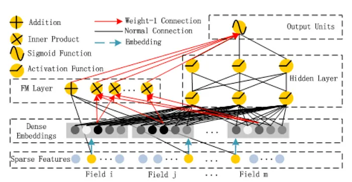
-
The authors demonstrate that DeepFM outperforms several competitors, including Google’s Wide and Deep model, by more than 0.42% in Logloss on internal company data.
-
DeepFM replaces the cross neural network in DCN with factorization machines, specifically employing dot products for feature interactions.
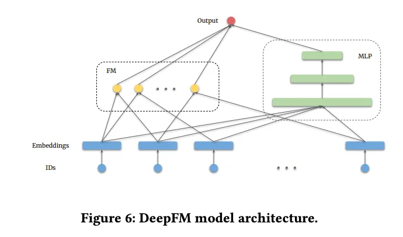
- DeepFM integrates FM with deep neural networks. The FM component models pairwise feature interactions, while the deep neural network captures higher-order feature interactions. This combined architecture effectively exploits both linear and non-linear relationships between features.
Summary
- Pros: Combines the benefits of FM and deep neural networks, capturing both pairwise and higher-order feature interactions. In other words, accurate modeling of both linear and non-linear relationships between features, providing a comprehensive understanding of feature interactions.
- Cons:
- DeepFM creates feature crosses in a brute-force way, simply by considering all possible combinations. This is not only inefficient, it could also create feature crosses that aren’t helpful at all, and just make the model overfit.
- Increased model complexity and potential challenges in training and optimization.
- Example Use Case: Click-through rate prediction in online advertising or personalized recommendation systems.
- Phase: Candidate Generation, Ranking.
- Recommendation Workflow: DeepFM is commonly utilized in both the candidate generation and ranking phases. It combines the strengths of factorization machines and deep neural networks. In the candidate generation phase, DeepFM can capture pairwise feature interactions efficiently. In the ranking phase, it can leverage deep neural networks to model higher-order feature interactions and improve the ranking of candidate items.
Neural Collaborative Filtering / NCF (2017)
- The integration of deep learning into recommender systems witnessed a significant breakthrough with the introduction of Neural Collaborative Filtering (NCF), introduced in He et. al (2017) from NUS Singapore, Columbia University, Shandong University, and Texas A&M University.
- This innovative approach marked a departure from the (then standard) matrix factorization method. Prior to NCF, the gold standard in recommender systems was matrix factorization, which relied on learning latent vectors (a.k.a. embeddings) for both users and items, and then generate recommendations for a user by taking the dot product between the user vector and the item vectors. The closer the dot product is to 1, the better the match. As such, matrix factorization can be simply viewed as a linear model of latent factors.
The key idea behind NCF is to substitute the inner product in matrix factorization with a neural network architecture to that can learn an arbitrary non-linear function from data. To supercharge the learning process of the user-item interaction function with non-linearities, they concatenated user and item embeddings, and then fed them into a multi-layer perceptron (MLP) with a single task head predicting user engagement, like clicks. Both MLP weights and embedding weights (which user/item IDs are mapped to) were learned through backpropagation of loss gradients during model training.
- The hypothesis underpinning NCF posits that user-item interactions are non-linear, contrary to the linear assumption in matrix factorization.
- The figure below from the paper illustrates the neural collaborative filtering framework.

- NCF proved the value of replacing (then standard) linear matrix factorization algorithms with a neural network. With a relatively simply 4-layer neural network, NCF proved that there’s immense value of applying deep neural networks in recommender systems, marking the pivotal transition away from matrix factorization and towards deep recommenders. They were able to beat the best matrix factorization algorithms at the time by 5% hit rate on the Movielens and Pinterest benchmark datasets. Empirical evidence showed that using deeper layers of neural networks offers better recommendation performance.
- Despite its revolutionary impact, NCF lacked an important ingredient that turned out to be extremely important for the success of recommenders: cross features, a concept popularized by the Wide & Deep paper described above.
Summary
- NCF proved the value of replacing (then standard) linear matrix factorization algorithms with a neural network.
- The NCF framework, which is both generic and capable of expressing and generalizing matrix factorization, utilized a multi-layer perceptron to imbue the model with non-linear capabilities.
- With a relatively simple 4-layer neural network, they were able to beat the best matrix factorization algorithms at the time by 5% hit rate on the Movielens and Pinterest benchmark datasets.
Deep and Cross Networks / DCN (2017)
- Wide and Deep has proven the significance of cross features, however it has a huge downside: the cross features need to be manually engineered, which is a tedious process that requires engineering resources, infrastructure, and domain expertise. Cross features à la Wide and Deep are expensive. They don’t scale.
- The key idea of Deep and Cross Networks (DCN), introduced in a Wang et al. (2017) by Google is to replace the wide component in Wide and Deep with a “cross neural network,” a neural network dedicated to learning cross features of arbitrarily high order (as opposed to second-order/pairwise features in Wide and Deep Networks). However, note that DCN (similar to DeepFM) learns this in a brute-force manner simply by considering all possible combinations uniformly (i.e., it calculates all pair-wise interactions), while newer implementations such as AutoInt leverage self-attention to automatically determine the most informative feature interactions, i.e., which feature interactions to pay the most attention to (and which to ignore by setting the attention weights to zero).
- Similar to Huawei’s DeepFM, introduced in Guo et al. (2017), DCN also replaces manual feature engineering in the wide component of Wide and Deep with a dedicated cross neural network that learns cross features. However, unlike DeepFM, the wide component is a cross neural network, instead of a so-called factorization machine layer.
- DCN was designed to learn explicit and bounded-degree cross features more effectively. It starts with an input layer (typically an embedding layer), followed by a cross network containing multiple cross layers that models explicit feature interactions, and then combines with a deep network that models implicit feature interactions.
- Cross Network: This is the core of DCN, explicitly applying feature crossing at each layer, where the highest polynomial degree increases with layer depth. The cross network layers efficiently capture feature interactions by combining linear transformations, feature interactions, and residual connections. The following figure shows the \((i + 1)^{th}\) cross layer.
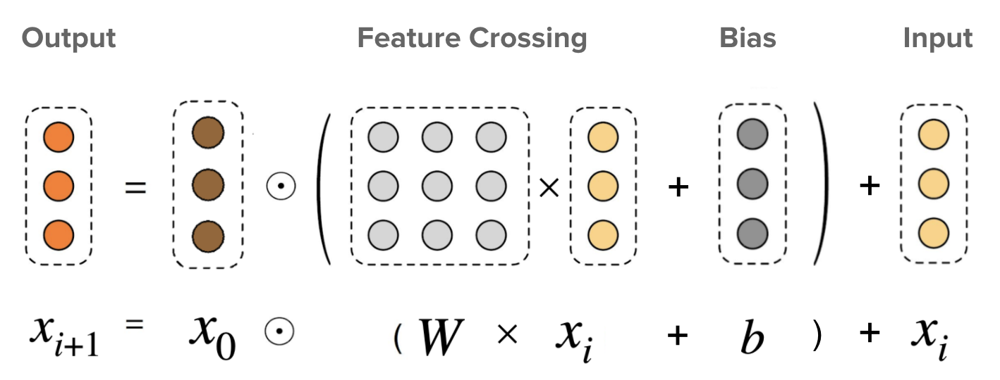
-
Deep Network: A traditional deep feed-forward network, consisting of fully-connected layers that use weights, biases, and non-linear activation functions to learn abstract representations and complex patterns in the data.
-
DCN Combination: The deep and cross networks are combined to form DCN. This can be done either by placing them in parallel, as shown in the figure below.
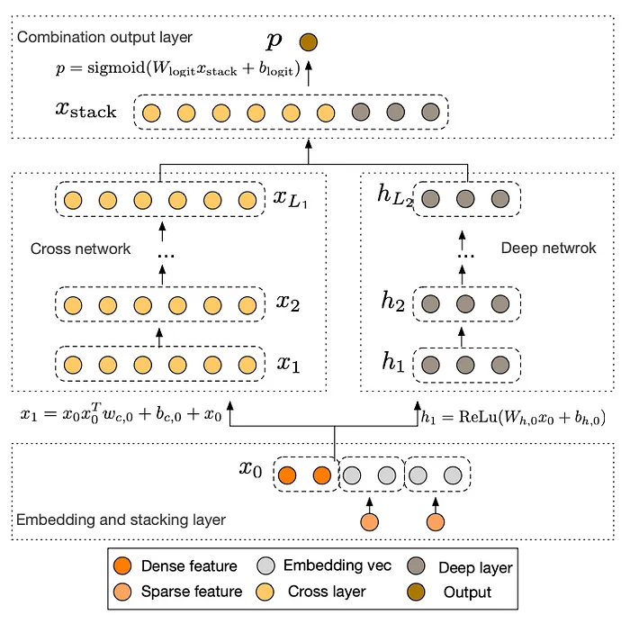
- What makes a cross neural network different from a standard MLP? As a reminder, in an MLP, each neuron in the next layer is a linear combination of all neurons in the previous layer, plus a bias term:
-
The Cross Network helps in better generalizing on sparse features by learning explicit bounded-degree feature interactions. This is particularly useful for sparse data, where traditional deep learning models might struggle due to the high dimensionality and lack of explicit feature interaction modeling.
-
By contrast, in the cross neural network the next layer is constructed by forming second-order (i.e., pairwise) combinations of the previous layer’s features:
- At the input, sparse features are transformed into dense vectors through an embedding layer while dense features are normalized. These processed features are then combined into a single vector \(x_0\), which includes the stacked embedding vectors for the sparse features and the normalized dense features. This combined vector is then fed into the network.
- Hence, a cross neural network of depth \(L\) will learn cross features in the form of polynomials of degrees up to \(L\).
The deeper the neural network, the higher the order of interactions that are learned.
- The unified wide and cross model architecture is training jointly with mean squared error (MSE) as it’s loss function.
-
For model evaluation, the Root Mean Squared Error (RMSE, the lower the better) is reported per TensorFlow: Deep & Cross Network (DCN).
- The Deep and Cross Network (DCN) introduces a novel approach to handling feature interactions and dealing with sparse features. Let’s break down how DCN accomplishes these tasks:
Forming Higher-Order Feature Interactions
- Mechanism of the Cross Network:
-
In a standard MLP, each neuron in a layer is a linear combination of all neurons from the previous layer. As delineated above, this is mathematically expressed as,
\[x_{l+1} = b_{l+1} + W \cdot x_l\]- where \(x_l\) is the input from the previous layer, \(W\) is the weight matrix, and \(b_{l+1}\) is the bias.
-
However, in the Cross Network of DCN, the idea is to explicitly form higher-order interactions of features.
-
- Second-Order Combinations:
-
In the Cross Network, the next layer is created by incorporating second-order (i.e., pairwise) combinations of the previous layer’s features. As delineated above, this is mathematically expressed as,
\[x_{l+1} = b_{l+1} + x_l + x_l \cdot W \cdot x_l^T\] - This approach allows the network to automatically learn complex feature interactions (cross features) that are higher than first-order, which would be impossible in a standard MLP without manual feature engineering. Specifically, in a standard MLP, feature interactions aren’t explicitly learned unless they’re manually engineered, meaning that the model would rely on domain experts to create new features that represent interactions between the original inputs. This is both labor-intensive and non-scalable.
- However, in DCN’s Cross Network, these feature interactions—specifically higher-order ones—are learned automatically by the model itself. This removes the need for manual feature engineering, allowing the model to capture complex relationships between features more effectively and without human intervention, especially in high-dimensional or sparse data scenarios.
-
Handling Sparse Features through Embedding Layers
-
Sparse to Dense Transformation: Neural networks generally work better with dense input data. However, in many real-world applications, features are often sparse (like categorical data). DCN addresses this challenge by transforming sparse features into dense vectors through an embedding layer for dense embedding generation.
-
Embedding Process: Dense embedding generation enables sparse, high-dimensional data (like one-hot encoded vectors) are converted into a lower-dimensional, continuous, and dense vector. Each unique category in the sparse feature is mapped to a dense vector, and these vectors are learned during the training process. This transformation is crucial because it enables the network to work with a dense representation of the data, which is more efficient and effective for learning complex patterns.
Explicit Feature Crossing and Polynomial Degree
-
Explicit Feature Crossing: The Cross Network in DCN explicitly handles feature crossing at each layer, directly modeling interactions between different features instead of relying on the deep network to implicitly capture these interactions.
-
Increasing Polynomial Degree with Depth: As the Cross Network’s depth increases, the polynomial degree of feature interactions grows, allowing the model to capture more complex interactions (higher-order feature combinations).
Essentially, DCN learns polynomials of features (i.e., higher order features), where the degree increases with the network’s depth.
-
Bounded-Degree Cross Features: The design of the Cross Network controls the degree of these polynomials through the network depth. This helps prevent excessive complexity, avoiding overfitting and ensuring computational efficiency.
-
Handling Sparse Features: DCN’s Cross Network forms higher-order feature interactions by explicitly crossing features at each layer while embedding sparse features into dense vectors, making them suitable for neural network processing. This enables automatic and efficient learning of complex feature interactions without manual feature engineering.
-
Integrating Outputs: The outputs from the Cross Network and the Deep Network are concatenated to combine their strengths.
-
Final Prediction: The concatenated vector is fed into a logits layer, which combines explicit feature interactions and deep learned representations to make the final prediction (e.g., for classification tasks).
Input and Output to Each Component
- Input to Cross and Deep Networks: Both networks take the same input vector, which is a combination of dense embeddings (from sparse features) and normalized dense features. Put siomply, embedded sparse features are concatenated with dense features and offered as input to both networks.
-
Output: The outputs of both networks are combined in the Combination Layer for the final model output.
- Based on the paper, the architecture and composition of each layer in the Cross and Deep Networks of the DCN are as follows:
Cross Network Layers
- Each layer in the Cross Network is defined by the following formula:
\(x_l+1 = x_0 x^{T}_l w_l + b_l + x_l\)
- Inputs and Outputs: \(x_l\) and \(x_l+1\) are the outputs from the \(l^{th}\) and \((l+1)^{th}\) cross layers respectively, represented as column vectors.
- Weight and Bias Parameters: Each layer has its own weight (\(w_l\)) and bias (\(b_l\)) parameters, which are learned during training.
- Feature Crossing Function: The feature crossing function is represented by \(f(x_l, w_l, b_l)\), and it is designed to fit the residual of \(x_l+1 - x_l\). This function captures interactions between the features.
- Residual Connection: Each layer adds back its input after the feature crossing, which helps in preserving the information and building upon the previous layer’s output.
Deep Network Layers
- Each layer in the Deep Network is structured as a standard fully-connected layer and is defined by the following formula:
\(hl+1 = f(w_l hl + b_l)\)
- Inputs and Outputs: \(hl\) and \(hl+1\) are the \(l^{th}\) and \((l+1)^{th}\) hidden layers’ outputs respectively.
- Weight and Bias Parameters: Similar to the cross layer, each deep layer has its own weight matrix (\(w_l\)) and bias vector (\(b_l\)).
- Activation Function: The function \(f(\cdot)\) is typically a non-linear activation function, such as ReLU (Rectified Linear Unit), which introduces non-linearity into the model, allowing it to learn complex patterns in the data.
Results
- Compared to a model with just the deep component, DCN has a 0.1% statistically significant lower logloss on the Criteo display ads benchmark dataset. And that’s without any manual feature engineering, as in Wide and Deep! (It would have been nice to see a comparison between DCN and Wide and Deep. However, the authors of DCN did not have a good method to manually create cross features for the Criteo dataset, and hence skipped this comparison.)
- The DCN architecture includes a cross network component that captures cross-feature interactions. It combines a deep network with cross layers, allowing the model to learn explicit feature interactions and capture non-linear relationships between features.
Summary
- DCN showed that we can get even more performance gains by replacing manual engineering of cross features with an algorithmic approach that automatically creates all possible feature crosses up to any arbitrary order. Compared to Wide & Deep, DCN achieved 0.1% lower logloss on the Criteo display ads benchmark dataset.
- Pros: Captures explicit high-order feature interactions and non-linear relationships through cross layers, allowing for improved modeling of complex patterns.
- Cons:
- DCN creates feature crosses in a brute-force way, simply by considering all possible combinations. This is not only inefficient, it could also create feature crosses that aren’t helpful at all, and just make the model overfit.
- More complex than simple feed-forward networks.
- May not perform well on tasks where feature interactions aren’t important.
- Increased model complexity, potential overfitting on sparse data.
- Use case: Useful for tasks where high-order feature interactions are critical, such as CTR prediction and ranking tasks.
- Example Use Case: Advertising platforms where understanding the interactions between user characteristics and ad features is essential for personalized ad targeting.
- Phase: Ranking, Final Ranking.
- Recommendation Workflow: The deep and cross architecture is typically applied in the ranking phase and the final ranking phase. The deep and cross network captures explicit feature interactions and non-linear relationships, enabling accurate ranking of candidate items based on user preferences. It contributes to the final ranking of candidate items, leveraging its ability to model complex patterns and interactions.
AutoInt (2019)
- Proposed in AutoInt: Automatic Feature Interaction Learning via Self-Attentive Neural Networks by Song et al. from from Peking University and Mila-Quebec AI Institute, and HEC Montreal in CIKM 2019.
- The paper introduces AutoInt (short for “automated feature interaction learning”), a novel method for efficiently learning high-order feature interactions in an automated way. Developed to address the inefficiencies and overfitting problems in existing models like DCN and DeepFM, which create feature crosses in a brute-force manner, AutoInt leverages self-attention to determine the most informative feature interactions.
- AutoInt employs a multi-head self-attentive neural network with residual connections, designed to explicitly model feature interactions in a 16-dimensional embedding space. It overcomes the limitations of prior models by focusing on relevant feature combinations, avoiding unnecessary and unhelpful feature crosses.
- Processing Steps:
- Input Layer: Represents user profiles and item attributes as sparse vectors.
- Embedding Layer: Projects each feature into a 16-dimensional space.
- Interacting Layer: Utilizes several multi-head self-attention layers to automatically identify the most informative feature interactions. The attention mechanism is based on dot product for its effectiveness in capturing feature interactions.
- Output Layer: Uses the learned feature interactions for CTR estimation.
- The goal of AutoInt is to map the original sparse and high-dimensional feature vector into low-dimensional spaces and meanwhile model the high-order feature interactions. As shown in the below figure, AutoInt takes the sparse feature vector \(x\) as input, followed by an embedding layer that projects all features (i.e., both categorical and numerical features) into the same low-dimensional space. Next, embeddings of all fields are fed into a novel interacting layer, which is implemented as a multi-head self-attentive neural network. For each interacting layer, high-order features are combined through the attention mechanism, and different kinds of combinations can be evaluated with the multi-head mechanisms, which map the features into different subspaces. By stacking multiple interacting layers, different orders of combinatorial features can be modeled. The output of the final interacting layer is the low-dimensional representation of the input feature, which models the high-order combinatorial features and is further used for estimating the clickthrough rate through a sigmoid function. The figure below from the paper shows an overview of AutoInt.
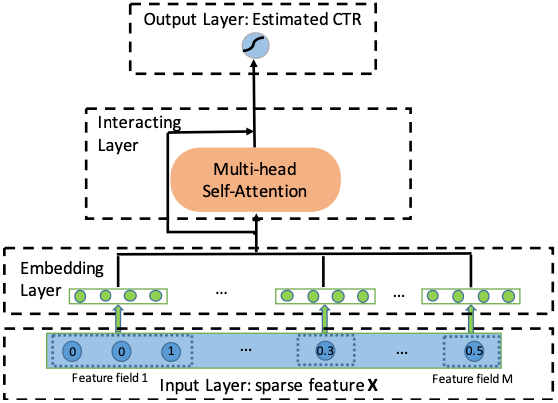
- The figure below from the paper illustrates the input and embedding layer, where both categorical and numerical fields are represented by low-dimensional dense vectors.
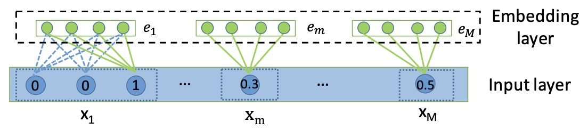
- AutoInt demonstrates superior performance over competitors like Wide and Deep and DeepFM on benchmark datasets like MovieLens and Criteo, thanks to its efficient handling of feature interactions.
- The technical innovations in AutoInt consist of: (i) introduction of multi-head self-attention to learn which cross features really matter, replacing the brute-force generation of all possible feature crosses, and (ii) the model’s ability to learn important feature crosses such as
Genre-Gender,Genre-Age, andRequestTime-ReleaseTime, which are crucial for accurate CTR prediction. - AutoInt showcases efficiency in processing large-scale, sparse, high-dimensional data, with a stack of 3 attention layers, each having 2 heads. The attention mechanism improves model explainability by highlighting relevant feature interactions, as exemplified in the attention matrix learned on the MovieLens dataset.
- AutoInt addresses the need for a model that is both powerful in capturing complex interactions and interpretable in its recommendations, without the inefficiency and overfitting issues seen in models that generate feature crosses in a brute-force manner.
Summary
- The primary concept in DCN and DeepFM involved generating feature crosses through brute-force methods by considering all possible combinations. This approach is not only inefficient but also risks creating feature crosses that offer no meaningful value, leading to model overfitting.
- What is required, therefore, is a method to automatically identify which feature interactions are significant and which can be disregarded. The solution, as you might expect, is self-attention.
AutoInt introduces the concept of multi-head self-attention within recommender systems: instead of generating all possible pairwise feature crosses through brute force, attention mechanisms are employed to discern which feature crosses are truly relevant.
- This was the key innovation behind AutoInt, short for “automated feature interaction learning,” as proposed by Song et al. (2019) from Peking University, China. Specifically, the authors first project each feature into a 16-dimensional embedding space, and then pass these embeddings through a stack of multi-head self-attention layers, which automatically identify the most informative feature interactions. The inputs to the key, query, and value matrices are simply the list of all feature embeddings, and the attention function is a dot product, chosen for its simplicity and effectiveness in capturing feature interactions.
- Although this may sound complex, there is no real mystery—just a series of matrix multiplications. For instance, the attention matrix learned by one of the attention heads in AutoInt for the MovieLens benchmark dataset is shown below:
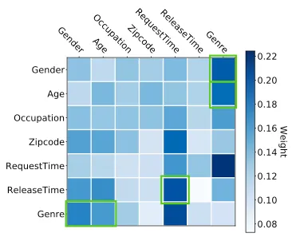
- The model learns that feature crosses such as
Genre-Gender,Genre-Age, andRequestTime-ReleaseTimeare important, highlighted in green. This makes sense, as men and women typically have different movie preferences, and children often prefer different films compared to adults. TheRequestTime-ReleaseTimefeature cross captures the movie’s freshness at the time of the training instance. - By utilizing a stack of three attention layers, each with two heads, the authors of AutoInt were able to outperform several competitors, including Wide and Deep and DeepFM, on the MovieLens and Criteo benchmark datasets.
DLRM (2019)
- Let’s fast-forward by a year to Meta’s DLRM (“deep learning for recommender systems”) architecture, proposed in Naumov et al. (2019), another important milestone in recommender system modeling.
- This paper by Naumov et al. from Facebook in 2019 introduces the DLRM (deep learning for recommender systems) architecture, a significant development in recommender system modeling, which was open-sourced in both PyTorch and Caffe2 frameworks.
- Contrary to the “deep learning” part in it’s name, DLRM represents a progression from the DeepFM architecture, maintaining the FM (factorization machine) component while discarding the deep neural network part. The fundamental hypothesis of DLRM is that interactions are paramount in recommender systems, which can be modeled using shallow MLPs (and complex deep learning components are thus not essential).
- The DLRM model handles continuous (dense) and categorical (sparse) features that describe users and products. DLRM exercises a wide range of hardware and system components, such as memory capacity and bandwidth, as well as communication and compute resources as shown in the figure below from the paper.

- The figure below from the paper shows the overall structure of DLRM.
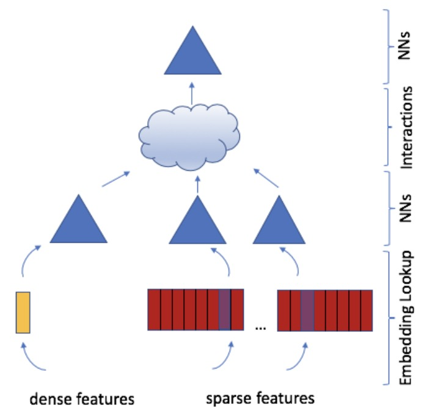
- DLRM uniquely handles both continuous (dense) and categorical (sparse) features that describe users and products, projecting them into a shared embedding space. These features are then passed through MLPs before and after computing pairwise feature interactions (dot products). This method significantly differs from other neural network-based recommendation models in its explicit computation of feature interactions and treatment of each embedded feature vector as a single unit, contrasting with approaches like Deep and Cross which consider each element in the feature vector separately.
DLRM shows that interactions are all you need: it’s akin to using just the FM component of DeepFM but with MLPs added before and after the interactions to increase modeling capacity.
- The architecture of DLRM includes multiple MLPs, which are added to increase the model’s capacity and expressiveness, enabling it to model more complex interactions. This aspect is critical as it allows for fitting data with higher precision, given adequate parameters and depth in the MLPs.
- Compared to other DL-based approaches to recommendation, DLRM differs in two ways. First, it computes the feature interactions explicitly while limiting the order of interaction to pairwise interactions. Second, DLRM treats each embedded feature vector (corresponding to categorical features) as a single unit, whereas other methods (such as Deep and Cross) treat each element in the feature vector as a new unit that should yield different cross terms. These design choices help reduce computational/memory cost while maintaining competitive accuracy.
- A key contribution of DLRM is its specialized parallelization scheme, which utilizes model parallelism on the embedding tables to manage memory constraints and exploits data parallelism in the fully-connected layers for computational scalability. This approach is particularly effective for systems with diverse hardware and system components, like memory capacity and bandwidth, as well as communication and compute resources.
- The paper demonstrates that DLRM surpasses the performance of the DCN model on the Criteo dataset, validating the authors’ hypothesis about the predominance of feature interactions. Moreover, DLRM has been characterized for its performance on the Big Basin AI platform, proving its utility as a benchmark for future algorithmic experimentation, system co-design, and benchmarking in the field of deep learning-based recommendation models.
- Facebook AI post.
Summary
- The key idea behind DLRM is to take the approach from DeepFM but only keep the FM part, not the Deep part, and expand on top of that. The underlying hypothesis is that the interactions of features are really all that matter in recommender systems. “Interactions are all you need!”, you may say.
- The deep component is not really needed. DLRM uses a bunch of MLPs to model feature interactions. Under the hood, DLRM projects all sparse and dense features into the same embedding space, passes them through MLPs (blue triangles in the above figure), computes all pairs of feature interactions (the cloud), and finally passes this interaction signal through another MLP (the top blue triangle). The interactions here are simply dot products, just like in DeepFM.
- The key difference to the DeepFM’s “FM” though is the addition of all these MLPs, the blue triangles. Why do we need those? Because they’re adding modeling capacity and expressiveness, allowing us to model more complex interactions. After all, one of the most important rules in neural networks is that given enough parameters, MLPs with sufficient depth and width can fit data to arbitrary precision!
- In the paper, the authors show that DLRM beats DCN on the Criteo dataset. The authors’ hypothesis proved to be true. Interactions, it seems, may really be all you need.
DCN V2 (2020)
- Proposed in DCN V2: Improved Deep & Cross Network and Practical Lessons for Web-scale Learning to Rank Systems by Wang et al. from Google, DCN V2 is an enhanced version of the Deep & Cross Network (DCN), designed to effectively learn feature interactions in large-scale learning to rank (LTR) systems.
- The paper addresses DCN’s limited expressiveness in learning predictive feature interactions, especially in web-scale systems with extensive training data.
- DCN V2 is focused on the efficient and effective learning of predictive feature interactions, a crucial aspect of applications like search recommendation systems and computational advertising. It tackles the inefficiency of traditional methods, including manual identification of feature crosses and reliance on deep neural networks (DNNs) for higher-order feature crosses.
- The embedding layer in DCN V2 processes both categorical (sparse) and dense features, supporting various embedding sizes, essential for industrial-scale applications with diverse vocabulary sizes.
- The core of DCN V2 is its cross layers, which explicitly create feature crosses. These layers are based on a base layer with original features, utilizing learned weight matrices and bias vectors for each cross layer.
- The figure below from the paper visualizes a cross layer.
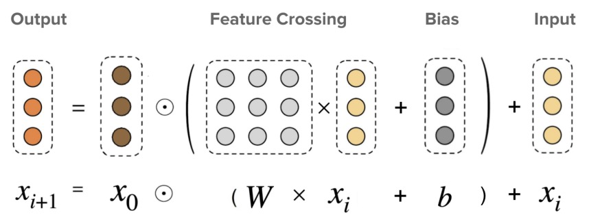
- As shown in the figure below, DCN V2 employs a novel architecture that combines a cross network with a deep network. This combination is realized through two architectures: a stacked structure where the cross network output feeds into the deep network, and a parallel structure where outputs from both networks are concatenated. The cross operation in these layers is represented as \(\mathrm{x}_{l+1}=\mathrm{x}_0 \odot\left(W_l \mathrm{x}_l+\mathrm{b}_l\right)+\mathrm{x}_l\).
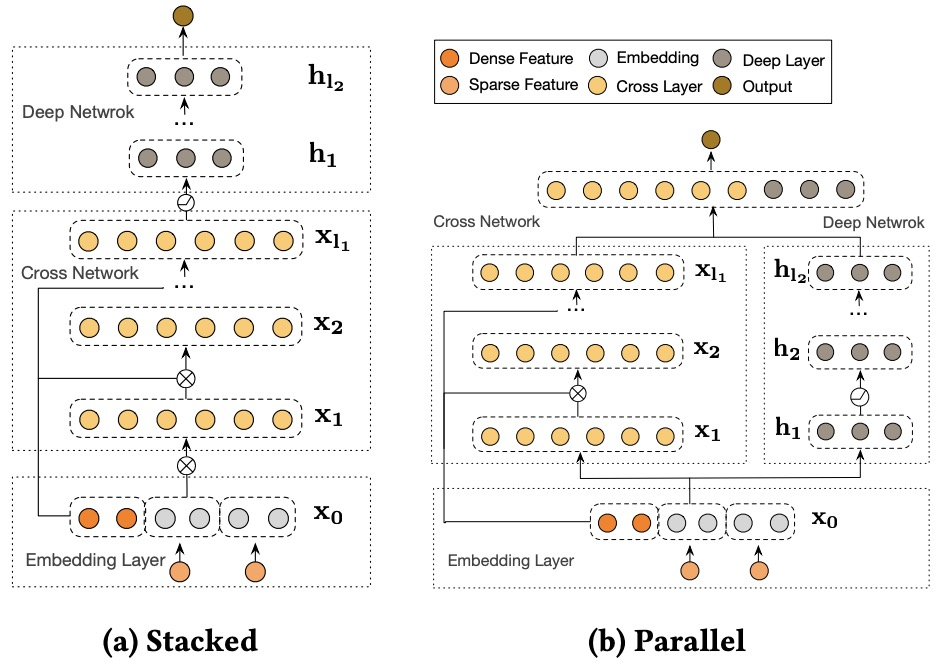
A key feature of DCN V2 is the use of low-rank techniques to approximate feature crosses in a subspace, improving performance and reducing latency. This is further enhanced by a Mixture-of-Experts architecture, which decomposes the matrix into multiple smaller sub-spaces aggregated through a gating mechanism.
- DCN V2 demonstrates superior performance in extensive studies and comparisons with state-of-the-art algorithms on benchmark datasets like Criteo and MovieLens-1M. It offers significant gains in offline accuracy and online business metrics in Google’s web-scale LTR systems.
- The paper also delves into polynomial approximation from both bitwise and feature-wise perspectives, illustrating how DCN V2 creates feature interactions up to a certain order with a given number of cross layers, thus being more expressive than the original DCN.
DCN vs. DCN V2
- DCN focuses on explicit low-order feature interaction modeling through cross networks but faces limitations in scalability and memory efficiency as interaction complexity increases.
- DCN V2 overcomes the limitations of DCN by enhancing the scalability and efficiency by incorporating low-rank techniques and Mixture-of-Experts architectures. These enhancements make DCN V2 suitable for large-scale, real-time applications with significant memory and computational optimizations.
Low-Rank Techniques in DCN V2
DCN Limitations in Scalability
- DCN captures nonlinear interactions using a Cross Network, where interaction complexity is tied to the number of cross layers. As the network depth increases, the number of parameters grows significantly, leading to inefficiencies in handling higher-order feature interactions, especially in large-scale systems.
-
The Cross Network formula in DCN is as follows:
\[x_{l+1} = x_0 \cdot (W_l \cdot x_l + b_l) + x_l\]- Here, \(W_l\) and \(b_l\) represent the weight matrix and bias vector for layer \(l\), while \(x_0\) is the original input, and \(x_l\) is the input to the current cross layer.
- While this structure allows DCN to model nonlinear interactions between features, its scalability is constrained by the computational cost of increasing parameters, making it less efficient for modeling arbitrary high-order interactions.
Low-Rank Approximations
-
DCN V2 addresses these scalability issues with low-rank approximations in the Cross Network. The weight matrix \(W_l\) is factorized to reduce computational complexity:
\[W_l \approx U_l \cdot V_l^T\]- where \(U_l\) and \(V_l\) are lower-dimensional matrices.
-
This factorization reduces computational overhead from \(O(d^2)\) to \(O(d \times r)\), where \(r\) is the rank, significantly improving efficiency for large datasets.
-
Low-rank approximations enable DCN V2 to model higher-order feature interactions with lower memory and computational requirements, making it better suited for web-scale, real-time systems.
Mixture-of-Experts Architecture
Enhancing Expressiveness with Mixture-of-Experts
-
DCN V2 introduces a Mixture-of-Experts architecture to enhance its expressiveness. This approach dynamically selects which “expert” network to activate based on input, allowing different subspaces to specialize in capturing specific feature interactions.
\[x_{l+1} = \sum_{i=1}^{K} G_i(x_l) \cdot E_i(x_l) + x_l\]- where, \(G_i(x_l)\) is a gating function that determines which expert \(E_i(x_l)\) to activate.
-
By assigning specific feature interactions to dedicated experts, the Mixture-of-Experts framework allows DCN V2 to model complex, higher-order interactions without significantly increasing computational cost.
Advantages of Mixture-of-Experts
- The architecture ensures that feature crosses are handled flexibly and efficiently. Unlike DCN, where feature interactions are bounded by the fixed structure of the Cross Network, DCN V2 leverages the gating mechanism to adaptively allocate computational resources to relevant subspaces.
- This dynamic expert selection enables DCN V2 to scale effectively for industrial applications, where both accuracy and speed are critical.
Model Structure: Parallel (DCN) vs. Stacked and Parallel (DCN V2)
- DCN V2 builds on the strengths of DCN by making the cross network more expressive and scalable, particularly through low-rank techniques and flexible model architectures. This makes DCN V2 better suited for large-scale, web-based recommendation systems while maintaining efficiency.
DCN
- The model structure in DCN consists of two parallel networks:
- Deep Network (DNN): The DNN is responsible for capturing implicit feature interactions, which are complex and nonlinear. The deep network uses multiple fully connected layers, allowing the model to learn intricate relationships between features that are not easily captured by simple feature crossing.
- Cross Network: This part of the model is designed to capture explicit feature interactions up to a fixed degree (bounded by the number of layers in the cross network). The cross layers systematically apply feature crosses at each level, combining the original features with the output of the previous cross layer to form higher-degree feature interactions. The cross network is particularly efficient in modeling lower-order feature crosses without the need for manual feature engineering.
- Parallel Structure: In DCN, both the DNN and cross network operate in parallel. The input features are passed through both networks, and their respective outputs are concatenated in the final logits layer for prediction. This parallel approach is effective at capturing both implicit and explicit interactions in the data, allowing DCN to perform well without requiring exhaustive feature engineering.
- Drawback: However, this structure might be limiting in cases where the sequential dependency between explicit and implicit features is important. The model does not allow for deep interactions between the cross network’s explicit crosses and the deep network’s implicit learning, as both networks run independently.
DCN V2
- DCN V2 enhances the flexibility of the model by introducing two ways of combining the deep network and cross network: stacked and parallel structures.
- Stacked Structure: In the stacked architecture, the cross network is applied first to generate explicit feature crosses, and the output of the cross network is then fed into the deep network to learn higher-order implicit interactions. This stacked approach allows the deep network to build upon the explicitly crossed features, enabling a richer, more nuanced learning process. The stacked structure is especially useful in situations where the interactions between explicit feature crosses and deeper, more implicit interactions need to be modeled sequentially. By first capturing simpler, bounded-degree feature crosses in the cross network, the deep network can then focus on learning more complex, high-order interactions that depend on these explicit crosses.
- Parallel Structure: Similar to the original DCN, DCN V2 also supports a parallel structure where both the deep network and cross network operate simultaneously. In this approach, the features are processed by both networks concurrently, and their outputs are concatenated for final prediction. This structure is particularly useful for datasets where implicit and explicit interactions are relatively independent, and combining them at the end provides a comprehensive understanding of the data.
- Combination Layer: In both the stacked and parallel setups, DCN V2 uses a combination layer to aggregate the outputs of the cross network and deep network before passing them to the final output layer (often a logits layer). Depending on the architecture chosen, the combination can take the form of either a sequential concatenation (in the stacked case) or a direct concatenation of both network outputs (in the parallel case).
- Flexibility and Adaptation: This added flexibility enables DCN V2 to better adapt to different types of datasets and tasks. For instance, if the dataset contains feature interactions that are primarily simple and can be captured by bounded-degree crosses, the stacked structure allows the model to first handle these simpler interactions and then apply deep learning for more complex patterns. Alternatively, if the dataset benefits from learning both types of interactions concurrently, the parallel structure can be used. This versatility makes DCN V2 highly customizable and better suited for diverse real-world applications.
- Efficiency: Although the stacked structure adds more depth and complexity to the model, DCN V2 remains computationally efficient by leveraging low-rank techniques and Mixture-of-Experts in the cross layers, ensuring that the additional depth does not significantly increase computational cost or inference time.
- Stacked vs. Parallel: The choice between stacked and parallel structures in DCN V2 depends on the specific requirements of the task at hand:
- The stacked structure is more suited for tasks where feature crosses learned by the cross network can directly inform and enrich the implicit interactions learned by the deep network. This sequential dependency enhances the ability to capture more complex feature relationships that depend on simpler interactions.
- The parallel structure works better for tasks where the explicit and implicit interactions are more independent and do not require one to build on the other. This allows for concurrent learning of different types of interactions, potentially improving the speed and efficiency of learning.
Summary of Key Differences
- Here’s a table that provides a detailed comparison, incorporating the technical aspects of both models, and highlights how DCN V2 overcomes the limitations of DCN to provide a more scalable, efficient, and production-ready solution.
| Metric | DCN | DCN V2 |
|---|---|---|
| Cross Features' Expressiveness | Captures nonlinear interactions through cross layers, with expressiveness limited by network depth. | Enhanced expressiveness with low-rank techniques and Mixture-of-Experts for higher-order interactions. |
| Scalability | Limited scalability as parameter complexity increases with deeper layers. | Improved scalability using low-rank factorization, optimizing for large-scale datasets. |
| Efficiency | Efficiency decreases with growing interaction complexity due to higher computational cost. | Reduces complexity from \(O(d^2)\) to \(O(d \times r)\) using low-rank approximations, improving efficiency. |
| Model Structure | Parallel structure where Cross Network and DNN run independently. | Offers both stacked and parallel structures, enabling richer interaction modeling with flexibility. |
| Handling Higher-Order Interactions | Limited by the depth of the Cross Network, with increasing computational overhead. | Capable of modeling complex, higher-order interactions efficiently through Mixture-of-Experts. |
| Flexibility | Fixed structure with limited adaptability to different tasks or datasets. | Flexible with stacked and parallel setups, adaptable to various datasets and interaction complexities. |
| Suitable Applications | Best suited for smaller systems with limited interaction complexities. | Optimized for large-scale, real-time systems, with memory and computational efficiency. |
Summary
- Proposed in DCN V2: Improved Deep & Cross Network and Practical Lessons for Web-scale Learning to Rank Systems by Wang et al. from Google. An enhanced version of the Deep & Cross Network (DCN), DCN V2, effectively learns feature interactions in large-scale learning to rank (LTR) systems.
- DCN V2 addresses the limitations of the original DCN, particularly in web-scale systems with vast amounts of training data, where DCN exhibited limited expressiveness in its cross network for learning predictive feature interactions.
- The paper focuses on efficient and effective learning of predictive feature interactions, crucial in applications like search recommendation systems and computational advertising. Traditional approaches often involve manual identification of feature crosses or rely on deep neural networks (DNNs), which can be inefficient for higher-order feature crosses.
- DCN V2 includes an embedding layer that processes both categorical (sparse) and dense features. It supports different embedding sizes, crucial for industrial-scale applications with varying vocabulary sizes.
- The core of DCN V2 is its cross layers, which create explicit feature crosses. These layers are built upon a base layer containing original features and use learned weight matrices and bias vectors for each cross layer.
- DCN V2’s effectiveness is demonstrated through extensive studies and comparisons with state-of-the-art algorithms on benchmark datasets like Criteo and MovieLens-1M. It outperforms these algorithms and offers significant offline accuracy and online business metrics gains in Google’s web-scale LTR systems.
- In summary, the key change in DCN V2’s cross network that enhances its expressiveness is the incorporation of low-rank matrices in the cross layers. This approach optimizes the computation of feature interactions, making the network more efficient and scalable, especially for complex, high-dimensional datasets. The use of low-rank matrices allows the network to capture complex feature interactions (including higher-order interactions) more effectively without the computational burden of full-rank operations.
DHEN (2022)
- Learning feature interactions is important to the model performance of online advertising services. As a result, extensive efforts have been devoted to designing effective architectures to learn feature interactions. However, they observe that the practical performance of those designs can vary from dataset to dataset, even when the order of interactions claimed to be captured is the same. That indicates different designs may have different advantages and the interactions captured by them have non-overlapping information.
- Proposed in DHEN: A Deep and Hierarchical Ensemble Network for Large-Scale Click-Through Rate Prediction, this paper by Zhang et al. from Meta introduces DHEN (Deep and Hierarchical Ensemble Network), a novel architecture designed for large-scale Click-Through Rate (CTR) prediction. The significance of DHEN lies in its ability to learn feature interactions effectively, a crucial aspect in the performance of online advertising services. Recognizing that different interaction models offer varying advantages and capture non-overlapping information, DHEN integrates a hierarchical ensemble framework with diverse interaction modules, including AdvancedDLRM, self-attention, Linear, Deep Cross Net, and Convolution. These modules enable DHEN to learn a hierarchy of interactions across different orders, addressing the limitations and variable performance of previous models on different datasets.
- The following figure from the paper shows a two-layer two-module hierarchical ensemble (left) and its expanded details (right). A general DHEN can be expressed as a mixture of multiple high-order interactions. Dense feature input for the interaction modules are omitted in this figure for clarity.

- In CTR prediction tasks, the feature inputs usually contain discrete categorical terms (sparse features) and numerical values (dense features). DHEN uses the same feature processing layer in DLRM, which is shown in the figure below. The sparse lookup tables map the categorical terms to a list of “static” numerical embeddings. Specifically, each categorical term is assigned a trainable \(d\)-dimensional vector as its feature representation. On the other hand, the numerical values are processed by dense layers. Dense layers compose of several Multi-layer Perceptions (MLPs) from which an output of a \(d\)-dimensional vector is computed. After a concatenation of the output from sparse lookup table and dense layer, the final output of the feature processing layer \(X_0 \in \mathbb{R}^{d \times m}\) can be expressed as \(X_0=\left(x_0^1, x_0^2, \ldots, x_0^m\right)\), where \(m\) is the number of the output embeddings and \(d\) is the embedding dimension.
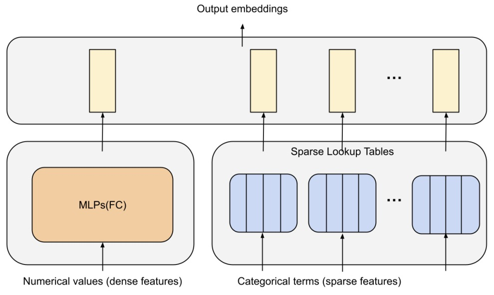
- A key technical advancement in this work is the development of a co-designed training system tailored for DHEN’s complex, multi-layer structure. This system introduces the Hybrid Sharded Data Parallel, a novel distributed training paradigm. This approach not only caters to the deeper structure of DHEN but also significantly enhances training efficiency, achieving up to 1.2x better throughput compared to existing models.
- Empirical evaluations on large-scale datasets for CTR prediction tasks have demonstrated the effectiveness of DHEN. The model showed an improvement of 0.27% in Normalized Entropy (NE) gain over state-of-the-art models, underlining its practical effectiveness. The paper also discusses improvements in training throughput and scaling efficiency, highlighting the system-level optimizations that make DHEN particularly adept at handling large and complex datasets in the realm of online advertising.n the Normalized Entropy (NE) of prediction and 1.2x better training throughput than state-of-the-art baseline, demonstrating their effectiveness in practice.
Summary
- In contrast to DCN, the feature interactions in DLRM are restricted to second-order (i.e., pairwise) interactions only: they are simply dot products of all pairs of embeddings. Referring back to the movie example (with features such as user, movie, actors, director), second-order interactions would include user-movie, user-actor, user-director, movie-actor, movie-director, and actor-director. A third-order interaction would involve combinations like user-movie-director, actor-actor-user, director-actor-user, and so forth.
- For instance, certain users may favor movies directed by Steven Spielberg that feature Tom Hanks, necessitating a cross feature to account for such preferences. Unfortunately, standard DLRM does not accommodate such interactions, representing a significant limitation.
- This is where DHEN, short for “Deep Hierarchical Ensemble Network”, comes in. Proposed in Zhang et al. (2022), the core concept of DHEN is to establish a “hierarchy” of cross features that deepens with the number of DHEN layers, allowing for third, fourth, and even higher-order interactions.
- At a high level, DHEN operates as follows: suppose we have two input features entering DHEN, which we denote as A and B. A 1-layer DHEN module would generate an entire hierarchy of cross features, incorporating both the features themselves and second-order interactions, such as:
A, AxA, AxB, BxA, B, BxB,
- where, “x” does not signify a singular interaction but represents a combination of the following five interactions:
- dot product,
- self-attention (similar to AutoInt),
- convolution,
- linear: \(y = Wx\), or
- the cross module from DCN.
- Adding another layer introduces further complexity:
A, AxA, AxB, AxAxA, AxAxB, AxBxA, AxBxB,
B, BxB, BxA, BxBxB, BxBxA, BxAxB, BxAxA,
- In this case, “x” represents one of five interactions, culminating in 62 distinct signals. DHEN is indeed formidable, and its computational complexity, due to its recursive nature, is quite challenging. To manage this complexity, the authors of the DHEN paper developed a new distributed training approach called “Hybrid Sharded Data Parallel”, which delivers a 1.2X increase in throughput compared to the then state-of-the-art distributed learning algorithm.
- Most notably, DHEN proves effective: in their experiments on internal click-through rate data, the authors report a 0.27% improvement in NE compared to DLRM when using a stack of 8 DHEN layers. While such a seemingly small improvement in NE might raise questions about whether it justifies the significant increase in complexity, at Meta’s scale, it likely does.
- DHEN does not merely represent an incremental improvement over DLRM; it introduces a comprehensive hierarchy of feature interactions, comprising dot products, AutoInt-like self-attention, convolution, linear processing, and DCN-like crossing, replacing DLRM’s simpler dot product approach.
GDCN (2023)
- Proposed in the paper Towards Deeper, Lighter, and Interpretable Cross Network for CTR Prediction by Wang et al. (2023) from Fudan University and Microsoft Research Asia in CIKM ‘23. The paper introduces the Gated Deep Cross Network (GDCN) and the Field-level Dimension Optimization (FDO) approach. GDCN aims to address significant challenges in Click-Through Rate (CTR) prediction for recommender systems and online advertising, specifically the automatic capture of high-order feature interactions, interpretability issues, and the redundancy of parameters in existing methods.
- GDCN is inspired by DCN V2 and consists of an embedding layer, a Gated Cross Network (GCN), and a Deep Neural Network (DNN). The GCN forms its core structure, which captures explicit bounded-degree high-order feature crosses/interactions. The GCN employs an information gate in each cross layer (representing a higher order interaction) to dynamically filter and amplify important interactions. This gate controls the information flow, ensuring that the model focuses on relevant interactions. This approach not only allows for deeper feature crossing but also adds a layer of interpretability by identifying crucial interactions, thus modelling implicit feature crosses.
- GDCN is a generalization of DCN V2, offering dynamic instance-based interpretability and the ability to utilize deeper cross features without a loss in performance.
The unique selling point of DCN V2 is that it treats all cross features equally, while GDCN uses information gates for fine-grained control over feature importance.
- GDCN transforms high-dimensional, sparse input into low-dimensional, dense representations. Unlike most CTR models, GDCN allows arbitrary embedding dimensions.
- Two structures are proposed: GDCN-S (stacked) and GDCN-P (parallel). GDCN-S feeds the output of GCN into a DNN, while GDCN-P feeds the input vector in parallel into GCN and DNN, concatenating their outputs.
- Alongside GDCN, the FDO approach focuses on optimizing the dimensions of each field in the embedding layer based on their importance. FDO addresses the issue of redundant parameters by learning independent dimensions for each field based on its intrinsic importance. This approach allows for a more efficient allocation of embedding dimensions, reducing unnecessary parameters and enhancing enhancing efficiency without compromising performance. FDO uses methods like PCA to determine optimal dimensions and only needs to be done once, with the dimensions applicable to subsequent model updates.
- The following figure shows the architecture of the GDCN-S and GDCN-P. \(\otimes\) is the cross operation (a.k.a, the gated cross layer).
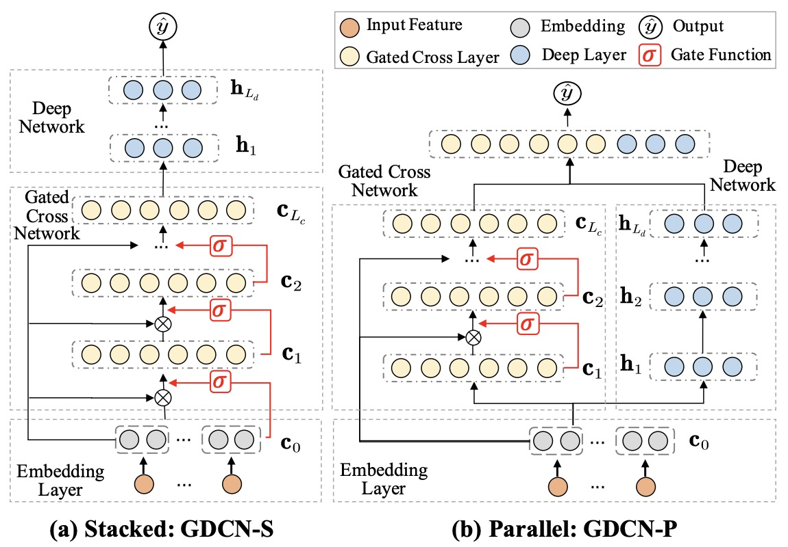
- The following figure visualizes the gated cross layer. \(\odot\) is elementwise/Hadamard product, and \(\times\) is matrix multiplication.
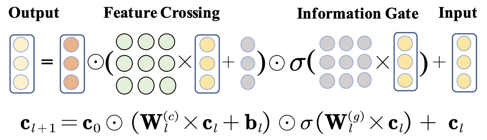
- Results indicate that GDCN, especially when paired with the FDO approach, outperforms state-of-the-art methods in terms of prediction performance, interpretability, and efficiency. GDCN was evaluated on five datasets (Criteo, Avazu, Malware, Frappe, ML-tag) using metrics like AUC and Logloss, showcasing the effectiveness and superiority of GDCN in capturing deeper high-order interactions. These experiments also demonstrate the interpretability of the GCN model and the successful parameter reduction achieved by the FDO approach. The datasets underwent preprocessing like feature removal for infrequent items and normalization. The comparison included various classes of CTR models and demonstrated GDCN’s effectiveness in handling high-order feature interactions without the drawbacks of overfitting or performance degradation observed in other models. GDCN achieves comparable or better performance with only a fraction (about 23%) of the original model parameters.
- In summary, GDCN addresses the limitations of existing CTR prediction models by offering a more interpretable, efficient, and effective approach to handling high-order feature interactions, supported by the innovative use of information gates and dimension optimization techniques.
Graph Neural Networks-based RecSys Architectures
- Graph Neural Networks (GNN) architectures utilize graph structures to capture relationships between users, items, and their interactions. GNNs propagate information through the user-item interaction graph, enabling the model to learn user and item representations that incorporate relational dependencies. This is particularly useful in scenarios with rich graph-based data.
- Pros: Captures relational dependencies and propagates information through graph structures, enabling better modeling of complex relationships.
- Cons: Requires graph-based data and potentially higher computational resources for training and inference.
- Advantages: Improved recommendations by incorporating the rich relational information among users, items, and their interactions.
- Example Use Case: Social recommendation systems, where user-user connections or item-item relationships play a significant role in personalized recommendations.
- Phase: Candidate Generation, Ranking, Retrieval.
- Recommendation Workflow: GNN architectures are suitable for multiple phases of the recommendation workflow. In the candidate generation phase, GNNs can leverage graph structures to capture relational dependencies and generate potential candidate items. In the ranking phase, GNNs can learn user and item embeddings that incorporate relational information, leading to improved ranking. In the retrieval phase, GNNs can assist in efficient retrieval of relevant items based on their graph-based representations.
- Pros: Captures relational dependencies and propagates information through graph structures, enabling better modeling of complex relationships.
- For a detailed overview of GNNs in RecSys, please refer to the GNN primer.
Two Towers in RecSys
- One of the most prevalent architectures in personalization and recommendation systems (RecSys) is the two-tower network. This network architecture typically comprises two towers: the user tower (\(U\)) and the candidate tower (\(C\)). These towers generate dense vector representations (embeddings) of the user and the candidate, respectively. The final layer of the network combines these embeddings using either a dot product or cosine similarity function.
- Consider the computational costs involved: if the cost of executing the user tower is \(u\), the candidate tower is \(c\), and the dot product is \(d\), then the total cost of ranking N candidates for a single user is \(N*(u + c + d)\). Since the user representation is fixed and computed once, the cost reduces to \(u + N*(c+d)\). Moreover, caching the embeddings can further reduce the cost to \(u + N* d + k\), where \(k\) represents additional fixed overheads. (source)
- The following image illustrates this concept (source):
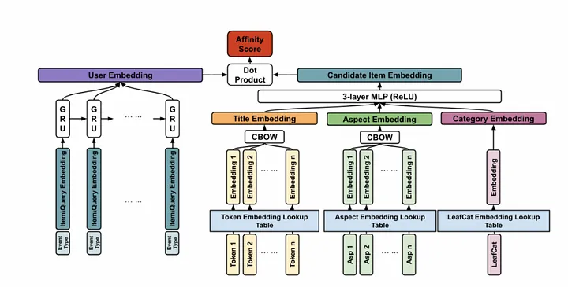
- The two-tower architecture consists of two distinct branches: a query tower (user tower) and a candidate tower (item tower). The query tower learns the user’s representation based on their history, while the candidate tower learns item representations from item features. The two towers are combined at the final stage to produce recommendations.
- Pros: This approach explicitly models user and item representations separately, facilitating a better understanding of user preferences and item features.
- Cons: It requires additional computation to learn and combine the representations from both the query and candidate towers.
- Advantages: This method enhances personalization by learning user and item representations separately, allowing for more granular preference capture.
- Example Use Case: This architecture is particularly effective in personalized recommendation systems where understanding both the user’s past behavior and item characteristics is crucial.
- Phase: Candidate Generation, Ranking.
- Recommendation Workflow: The two-tower architecture is commonly used in the candidate generation and ranking phases. During candidate generation, it allows for the independent processing of user and item features, generating separate representations. In the ranking phase, these representations are merged to assess the relevance of candidate items to the user’s preferences.
- The two-tower model gained formal recognition in the machine learning community through Huawei’s 2019 PAL paper. This model was designed to address biases in ranking models, particularly position bias in recommendation systems.
- The two-tower architecture typically includes one tower for learning relevance (user/item interactions) and another for learning biases (such as position bias). These towers are combined, either multiplicatively or additively, to generate the final output.
- Examples of notable two-tower implementations:
- Huawei’s PAL model employs a multiplicative approach to combine the outputs of the two towers, addressing position bias within their app store.
- YouTube’s “Watch Next” paper introduced an additive two-tower model, which not only mitigates position bias but also considers other selection biases by incorporating features like device type.
- The two-tower model has demonstrated significant improvements in recommendation systems. For instance, Huawei’s PAL model improved click-through and conversion rates by approximately 25%. YouTube’s model, by integrating a shallow tower for bias learning, also showed increased engagement metrics.
- Challenges and considerations:
- A primary challenge in two-tower models is ensuring that both towers learn independently during training, as relevance can interfere with the learning of position bias.
- Techniques such as Dropout have been employed to reduce over-reliance on certain features, such as position, and to enhance generalization.-
- Overall, the two-tower model is recognized as an effective approach for building unbiased ranking models in recommender systems. It remains a promising area of research, with significant potential for further development.
Split Network
- A split network is a generalized version of a two tower network. The same optimization of embedding lookup holds here as well. Instead of a dot product, a simple neural network could be used to produce output.
- The image below (source) showcases this.
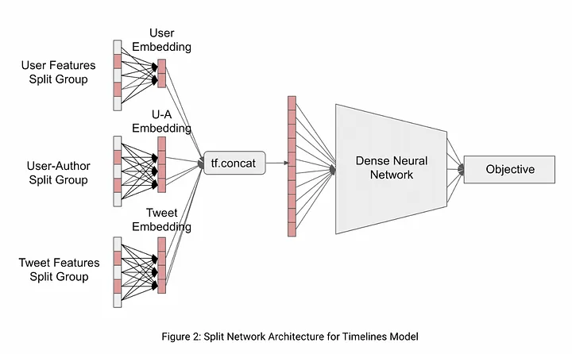
- In a split network architecture, different components of the recommendation model are split and processed separately. For example, the user and item features may be processed independently and combined in a later stage. This allows for parallel processing and efficient handling of large-scale recommender systems.
- Pros: Enables parallel processing, efficient handling of large-scale systems, and flexibility in designing and optimizing different components separately.
- Cons: Requires additional coordination and synchronization between the split components, potentially increasing complexity.
- Advantages: Scalability, flexibility, and improved performance in handling large-scale recommender systems.
- Example Use Case: Recommendation systems with a massive number of users and items, where parallel processing is crucial for efficient computation.
- Phase: Candidate Generation, Ranking, Final Ranking.
- Recommendation Workflow: The split network architecture can be utilized in various phases. During the candidate generation phase, the split network can be used to process user and item features independently, allowing efficient retrieval of potential candidate items. In the ranking phase, the split network can be employed to learn representations and capture interactions between the user and candidate items. Finally, in the final ranking phase, the split network can contribute to the overall ranking of the candidate items based on learned representations.
Summary
- Neural Collaborative Filtering (NCF) represents a pioneering approach in recommender systems. It was one of the initial studies to replace the then-standard linear matrix factorization algorithms with neural networks, thus facilitating the integration of deep learning into recommender systems.
- The Wide & Deep model underscored the significance of cross features—specifically, second-order features formed by intersecting two original features. This model effectively combines a broad, shallow module for handling cross features with a deep module, paralleling the approach of NCF.
- Deep and Cross Neural Network (DCN) was among the first to transition from manually engineered cross features to an algorithmic method capable of autonomously generating all potential feature crosses to any desired order.
- Deep Factorization Machine (DeepFM) shares conceptual similarities with DCN. However, it distinctively substitutes the cross layers in DCN with factorization machines, or more specifically, dot products.
- Automatic Interactions (AutoInt) brought multi-head self-attention mechanisms, previously known in Large Language Models (LLMs), into the domain of feature interaction. This technique moves away from brute-force generation of all possible feature interactions, which can lead to model overfitting on noisy feature crosses. Instead, it employs attention mechanisms to enable the model to selectively focus on the most relevant feature interactions.
- Deep Learning Recommendation Model (DLRM) marked a departure from previous models by discarding the deep module. It relies solely on an interaction layer that computes dot products, akin to the factorization machine component in DeepFM, followed by a Multi-Layer Perceptron (MLP). This model emphasizes the sufficiency of interaction layers alone.
- Deep Hierarchical Embedding Network (DHEN) builds upon the DLRM framework by replacing the conventional dot product with a sophisticated hierarchy of feature interactions, including dot product, convolution, self-attention akin to AutoInt, and crossing features similar to those in DCN.
- Gated Deep Cross Network (GDCN) enhances Click-Through Rate (CTR) prediction in recommender systems by improving interpretability, efficiency, and handling of high-order feature interactions.
- The Two Tower model in recommender systems, known for its separate user and candidate towers, optimizes personalized recommendations and addresses biases like position bias, representing an evolving and powerful approach in building unbiased ranking models.
Comparative Analysis
- This table offers a detailed comparative analysis table summarizing the key characteristics of various recommender system architectures in terms of features, advantages, limitations, use cases, and applicable phases in recommendation workflows.
| Technique | Key Features | Advantages | Limitations | Example Use Cases | Phase |
|---|---|---|---|---|---|
| Wide and Deep (2016) | Combines a wide linear model for memorization with a deep neural network for generalization. Cross features essential. | Balances memorization and generalization. Captures both specific rules and complex patterns. | Requires manual engineering of cross features, increasing complexity. | E-commerce, app recommendations | Ranking |
| Factorization Machines (FM, 2010) | Models pairwise feature interactions using embeddings. | Handles sparse data effectively. Efficient computation of pairwise interactions. | Limited to pairwise interactions. Struggles with non-linear, higher-order interactions. | CTR prediction, basic recommendations | Ranking, Candidate Generation |
| DeepFM (2017) | Integrates FM with deep networks for higher-order feature interactions. | Combines FM's efficiency with deep learning's capability to model non-linear interactions. | Brute-force feature cross generation increases complexity and potential overfitting. | Online advertising, CTR prediction | Ranking, Candidate Generation |
| NCF (2017) | Substitutes matrix factorization's dot product with neural networks for modeling user-item interactions. | Adds non-linearity, beating matrix factorization in benchmarks. | Lacks explicit cross-feature modeling (critical for some domains). | Personalized recommendations | Ranking |
| DCN (2017) | Introduces Cross Network for explicit feature interactions of bounded order. | Automates cross-feature learning. Improves efficiency for sparse data. | Limited scalability and expressiveness as complexity grows with depth. | Display advertising, e-commerce | Ranking |
| DCN V2 (2020) | Enhances DCN with low-rank approximations and Mixture-of-Experts. Supports stacked/parallel structures. | More scalable and expressive. Models higher-order interactions effectively. | Complexity and additional computational cost. | Large-scale ranking systems | Ranking |
| AutoInt (2019) | Uses multi-head self-attention for feature interaction modeling. | Selectively focuses on relevant feature interactions, improving efficiency and reducing overfitting. | Requires significant resources for training self-attention mechanisms. | CTR prediction, movie recommendations | Ranking |
| DLRM (2019) | Focuses solely on feature interaction via dot products, with MLPs for capacity. | Simple and computationally efficient. Optimized for hardware scalability. | Limited to second-order (pairwise) interactions. | Web-scale personalization | Ranking, Candidate Generation |
| DHEN (2022) | Builds hierarchical feature interaction using diverse modules (e.g., self-attention, convolution). | Captures higher-order feature interactions. Strong performance gains in large-scale systems. | High computational and implementation complexity. | Online advertising | Ranking, Candidate Generation |
| GDCN (2023) | Adds gated mechanisms to cross networks for fine-grained interaction control. Supports dimension optimization. | Efficient parameter usage, interpretable results, captures deeper high-order interactions. | Requires careful tuning of gates and dimensions. | CTR prediction | Ranking, Final Ranking |
| Graph Neural Networks (GNN) | Propagates information in user-item interaction graphs. | Effectively models complex relational data. Captures dependencies among users and items. | Computationally intensive. Requires graph-based data. | Social recommendations, collaborative filtering | Candidate Generation, Ranking |
| Two Towers (2019) | Separate user and item towers generate embeddings, combined via dot product or cosine similarity. | Simplifies user-item representation learning. Efficient inference through caching. | May struggle with learning complex interactions due to separation of towers. | Personalized search, e-commerce | Candidate Generation, Ranking |
| Split Network | Generalization of Two Towers using neural networks to combine user and item features. | Flexible and scalable. Suitable for large-scale systems. | Requires efficient synchronization between split components. | Large-scale recommendations | Candidate Generation, Ranking |